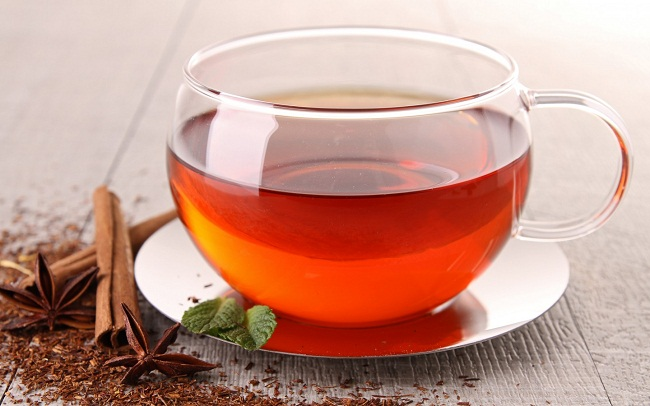

Home Remedy
Home Remedy For Weight Loss.

1. Cinnamon Tea
Blood sugar has a direct impact on your weight as it affects how hungry and how energetic you are (if you have energy you're much more likely to exercise!)
If your blood sugar is balanced you are less likely to have a disproportionally large appetite, and your body will be more apt to use fat (energy) rather than storing it.
While debate about its effectiveness drags on, more and more preliminary studies are coming out showing that cinnamon can help manage blood sugar levels, so why not whip up a spicy cinnamon tea?
You will need ..
-1 teaspoon of ground cinnamon
-1 cinnamon stick
-8 ounces of fresh water
Directions
Place the cinnamon in a mug and cover with 8 ounces of boiling water. Steep for 15 minutes before straining. Drinking 1-2 times a day.
2. Green Tea & Ginger
Green tea has long been debated as a weight loss aid, and more research is needed to confirm or deny how well it works. While some studies have turned up nothing, others have identified three main components in green tea that could help manage weight-caffeine, catechins, and theanine. Caffeine is just an overall boost to your system, and speeds up a number of bodily processes, including metabolism related to weight (technically speaking, metabolism refers to any and all biological processes in a living organism needed to sustain life.)
Catechins are considered anti-oxidant flavonoids, and are superior in green tea rather than black tea due to a difference in processing (black tea is fermented.) While the mechanism is yet to be determined, in vitro and in vivo studies have shown that catechins can help lower the absorption of lipids (fats) via the intestinal track. Theanine is an amino acid in green tea that can encourage the release of dopamine, the chemical that makes you "happy" and relaxed. If you tend to eat due to stress, this may be useful. It also counters the caffeine so you don't get all jittery. The ginger added to green tea will help improve digestion and add a little flavor-no sugar or milk in this tea!
You will need...
-1/2 inch of fresh ginger root, peeled and finely chopped OR half teaspoon ground ginger.
-1 teaspoon of green tea
-8 ounces of fresh water.
-Raw, organic honey (optional)
Directions
Place green tea and ginger in a strainer or sieve and cover with 8 ounces of boiling water. Steeping green tea for too long can leave it with a bitter taste, so don't exceed 3-4 minutes. You can stir in a little raw honey if you really need to sweeten it, but avoid milk or sugar at all costs. Drink 1-2 cups daily on an empty stomach.
3. Plain Yogurt and Honey
This is an awesome breakfast/snack. It's one of those "I wouldn't guess this is good for me!" type foods. The probiotics in yogurt do wonders for the digestive track and maintains a healthy balance of gut flora that optimizes digestion and the breakdown of certain substances (like fat.) When you digestive track is running smoothly, your body is processing things better and it's not as likely to pack on the pounds. The honey is just a little added (healthy) sweetness to satisfy any cravings you might have. The beautiful thing here is that you really don't feel like you're getting shorted any flavor or fullness when you eat it. For optimum weight-loss awesomeness, try low fat yogurt.
Note: There was once a time when certain large companies began to add so much sugar to their yogurt the amounts surpassed those found in sugary breakfast cereal, like Lucky Charms. People were gobbling it up and wondering how it could be so tasty and good for you, when really the image and wholesomeness of yogurt was simply being abused. Read the nutrition label first.
You will need..
-1/2-1 cup of plain (not vanilla) yogurt.
-1 tablespoon of organic raw honey, or to taste
Directions
Eat this for a snack or breakfast, adding on the honey for flavor. Feel free to try adding fresh fruit or even oats for a little variety.
4. Get Enough Sleep
Our body is a cohesive unit, a complex system, not just individual parts. Everything has to be working harmoniously for things to be balanced and correct-like your weight. Studies have shown that even just a little bit of sleep deprivation over the short time frame of 4 nights results in increased insulin resistance, and essentially ages the metabolism 10-20 years in that time frame. The fat cells sensitivity to insulin dropped by 30% to levels usually seen in people who were obese or diabetic. By getting the right amount of sleep, you’re doing more than just resting your body-you’re ensuring that all systems are go, and that you have the best chance possible to succeed at losing weight.
5.Go Ahead, Eat That Chocolate
Remember deprivation hardly works? When you get the urge for a sweet treat, turn to dark chocolate. It will help curb your craving thanks to its insulin-resistance lowering flavonoids. The healthy fats in dark chocolate can also slow the absorption of sugar into your blood stream, preventing “insulin spikes.” Studies have shown that eating some can help put a stop to cravings for sugar, salt, and fat. However, the chocolate must be 70% cocoa, otherwise it has too much milk or sugar added to be beneficial.
You will need..
-70% dark chocolate
Directions
Directly after a meal, eat a piece of dark chocolate roughly the size of your thumb to glean its benefits.
6. Apple Snacks
An apple a day keeps the weight at bay! While not overflowing with nutrients like other fruits or vegetables, apples still have a number of benefits that can contribute to weight loss. First, they are packed with fiber, which helps curb appetite, so eat one when you feel the urge to snack on some less-desirable foods. Second, they can help regulate blood sugar levels, and therefore help regulate your appetite and energy levels. Third, the pectin in apples can lower cholesterol, and serve as another way to help regulate blood sugar, by slowing the absorption of carbohydrates. Finally, apples are a naturally low-sodium food, which can help prevent excess water retention and water weight.
You will need..
-1-2 fresh apples.
Directions
Rinse and slice an apple, and eat one to two daily. Leave the skin on, as that contains a good amount of fiber.
7. Just Add Water
Staying hydrated is an important aspect of weight loss that people often brush off-you don’t want to gain water weight and feel bloated right? Either that or you hear that you should drink ice cold water to burn more calories. Not exactly. The idea that ice cold water burns more calories because your body tries to “warm it up” first may technically be true, but the effect is miniscule (like 8 calories miniscule.) Rather, you need to be hydrated for your body to run smoothly, and that includes burning fat. It flushes bad stuff through your system, and also helps curb appetite. And don’t fret about water weight-if you are staying hydrated, your body is less likely to retain water since it simply doesn’t have the need to-similar to how eating more can make weight loss easier, within reason. I should also say-DO NOT BUY INTO SPECIALTY WATERS! Get your vitamins through your diet or supplements. Those waters are not better for you-in fact some are so loaded with flavoring and what not they rival soda.
You will need..
-8 ounces of fresh water
Directions
Drink at least 8 cups of fresh water every day.
Weight Loss Tips
-Weight isn't everything. Muscle does weigh more than fat, and being fit and healthy is more important than being incredibly "thin." Healthy looks good on you, and don't forget it!
-Never underestimate stress as a cause of weight gain. The body cannot perform any function, including burning fat for energy, optimally when under stress.
-There are no super-foods. Don't rely on one thing to help you lose weight-always maintain a balanced diet.
-Don't eat before bed. Your metabolism slams on the brakes when you go to sleep, so eating at night makes weight gain tough to avoid.
-Get a buddy to make goals that the two of you strive towards. When you lose willpower or motivation, a friend can be all that stands between success and setback.
-Read a book called Salt, Sugar, Fat: How the Food Giants Hooked Us In by New York Times investigative reporter Michael Moss. Just do it. It will give you something new and tangible to hold onto when you are trying to avoid junk food. At the risk of sounding corny, it actually changed my life.
-Along the lines of the first tip-manage your weight to be healthy, and ultimately, happy. Ignore images of perfect figures. Forget about the silly things society bombards you with, telling you what you should look like. To say that's easier said than done is the understatement of the century, but do try to keep it in mind. When you are healthy, and happy, you truly glow from the inside out.